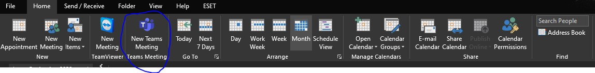

MS Teams
Założyliśmy wam bezpłatne konta w programie MS Teams, korzystajac z udostepnienia takich licencj przez Microsoft. Program możecie pobrać i zainstalować z poniższego linku. http://./Instrukcje/Teams_windows_x64.exe
Instalacja nie wymaga instalacji przez nas, nie są potrzebne uprawnia administratora. Więc możecie ją przeprowadzić sami. Do zalogowania służą rozdane dane do logowania, hasło jest hasłem tymczasowym i wymaga zmiany przy pierwszym logowaniu. Więcej instrukcji dotyczących programem pod linkiem:
Dodatkowo:W celu uruchomienia dodatku Teams w pakiecie MS Office(np. w Outlooku) może być wymagane uruchomienie wpisu rejestru z strony: http://./Instrukcje/Teams&SkypeAddon.7z
P.S.
Jeśli ktoś nie dostał haseł, to są one do odbioru u nas w pomieszczeniu.